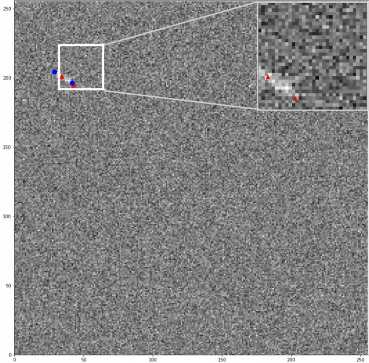

|
Dark Mode
I am a 4th year student at the University of Connecticut. I am passionate about machine learning and computer vision. Through my internships, coursework, and personal projects, I have developed cross-disciplinary skills in computer science, electrical engineering, and mechanical engineering. My goal is to pursue a career as a machine learning engineer and solve complex problems such as autonomous driving and surgical robotics. Email / Latest CV / LinkedIn / Google Scholar / GitHub / StackOverflow / Photography |
{kind=link}
|
My current research interests lie in the intersection of machine learning and computer vision, along with natural language processing. |
|
Jacob Krucinski Lund University - EDAN70 Course Project, Advisor: Sonja Aits PDF / Presentation / GitHub As a member of the Aits Lab, I explored key models such as BioGPT and SciBERT for relation extraction in biomedical literature using annotated corpora including BC5CDR, ChemProt, and DrugProt. Specifically, I used a combined ChemProt and DrugProt corpus for SciBERT fine-tuning and improved precision, recall, and F1 score by 5%. |
|
|  |
Jacob Krucinski, Adam Bienkowski, Krishna Pattipati IEEE Aerospace Conference, 2021 This paper presents computationally efficient CNN models for detecting and localizing streaking targets from an optical sensor's Focal Plane Array. When compared to state-of-the-art (SOTA) probabilistic techniques, the machine learning models were 340 times faster for detection and approximately 360 times faster for localization on full size 256x256 images. For detection, the ROC AUC was 0.94 for the ML model and 0.85 for the SOTA model. For localization, the MSE was 0.0351 for the ML model and 0.243 for the SOTA model. |
|
|
|
University of Connecticut, Storrs, CT, USA Sep. 2020 to May 2024 Bachelor of Science in Engineering, Computer Science and Engineering, Mathematics Minor |
|
Lund Institute of Technology (LTH), Lund, Sweden Jan. to Jun. 2023 Study abroad semester taking courses in computer vision, databases, and process simulation |
|
|
|
Engineering Development Group Intern, The MathWorks Inc., Natick, MA
Jun. to Aug. 2023 Designed and implemented a REST API feature with asynchronous support to facilitate integration with MATLAB and other language environments. |
|
Undergraduate Teaching Assistant,
University of Connecticut, Storrs, CT
Aug. to Dec. 2022 Assistant for CSE 2301 - Digital Logic Design. This course covered the fundamentals of Boolean Algebra and Transistor-Transistor Logic where students applied their skills in weekly labs. I assisted with labs, grading exams/reports, and hosted office hours. |
|
AI/ML Summer Engineering Intern, Medtronic, North Haven, CT
Jun. to Aug. 2022 Deployed an SVM model on the Signia surgical stapler for staple quality assessment based on sensor measurements. Also, I trained a CNN model for visual staple quality assessment. |
|
AI/ML Engineering Intern, Lockheed Martin, Shelton, CT
May to Jul. 2021 Part of (Neural) Network Training and Deployment IRAD team developing an ML-based object detection model for the Stalker XE drone. |
|
|
|
Updated at Oct. 2023
Thanks Jon Barron for this amazing template
|